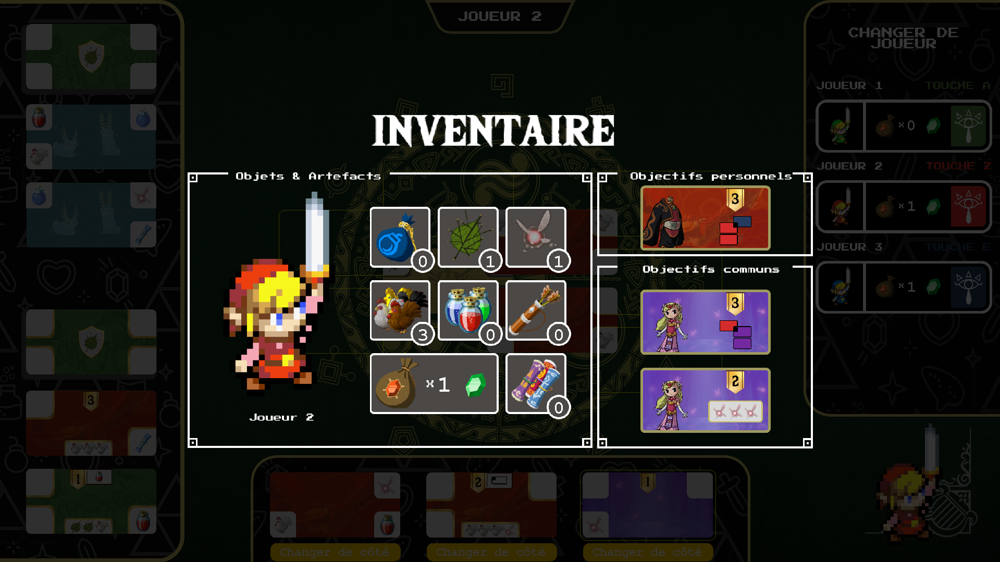
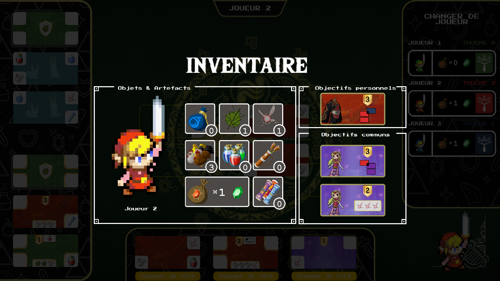

Étudiant en informatique
Raphael DAVIOT
Qui suis-je?
Étudiant en 1ere année de BUT informatique, je suis ambitieux, organisé, et opiniâtre. Mes compétences en programmation sont polyvalentes, et je cherche à intégrer une école d'ingénieur après mon BUT pour faciliter mon entrée dans le monde professionnel. Je suis actuellement à la recherche d’une alternance en informatique pour une durée de 2 ans.
Mon parcours scolaire
Collège DANIEL FERY
Brevet des collèges avec la mention Très Bien
Lycée GUILLAUME BUDE
Baccalauréat avec les spé Maths et SI ainsi que option Maths
expertes. (Mention bien)
Université GUSTAVE EIFFEL
Bachelor universitaire de technologie en informatique.
Mes expériences professionnelles
UGAP - France, Champs-sur-Marne
2020/01/27 - 2020/01/31
Durant ces 5 jours au sein de la société UGAP, j'ai pu observer de nombreux travaux dans le domaine de l'informatique. J'ai principalement observé les métiers de Data Scientist, Web Designer et Développeur et Développeur, Responsable E-merchandising, Réseaux Sociaux et de communication. J'ai pu discuter avec eux à propose de leurs conditions de travail, le management et les projets en cours.
Club sportif LBVB - France, Limeil-Brévannes
2023/09/16 - Aujourd'hui
J'encadre la section 10-14 ans de l'école de volley-ball m'aidant à améliorer mes qualités de management, d'expression orale et de patience. Je dois être capable de me mettre dans la situation d'un débutant pour le conseiller et créer des exercices à la portée de tous. Je dois créer une cohésion dans l'équipe qu'ils puissent tous s'améliorer même s'ils ont des aptitudes différentes.
Mes compétences

Python

Java

Langage C

PHP

HTML/CSS
SQL, MCD, MLD
Mon portfolio
 

Le projet Codex Naturalis représente une prouesse technique dans le domaine du développement d'applications informatiques de jeux de société. Notre objectif était de traduire fidèlement les mécanismes du jeu Codex Naturalis dans une expérience numérique immersive pour 1 à 4 joueurs, tout en adoptant un style visuel distinctif .
L'un des principaux défis auxquels nous avons été confrontés était la gestion complexe du board de jeu et des interactions entre les joueurs. La création d'une structure de données basée sur une HashMap pour associer les cartes à une position a été cruciale pour résoudre cette difficulté.
De plus, la gestion des différents joueurs et la préservation de la confidentialité des cartes en multijoueur ont représenté des défis significatifs.
En raison de nos choix esthétiques, comme l'intégration d'éléments visuels, nous avons également dû adapter notre code pour une intégration harmonieuse de ces éléments tout en préservant les performances et l'ergonomie du jeu.
Malgré ces défis, une organisation méthodique et une collaboration efficace ont permis de surmonter ces obstacles techniques, aboutissant à la création d'une application réussie offrant une expérience de jeu fluide et immersive pour les joueurs.
QIX est un jeu de puzzle de traçage de lignes qui a marqué l'année 1981, et notre défi consiste à ressusciter cette expérience à travers la programmation d'un jeu vidéo en utilisant le langage Python.
Ce projet, réalisé avec une bibliothèque exclusive à notre université, offre un aperçu authentique du travail des développeurs des années 80, qui étaient limités à une interface graphique rudimentaire.
L'absence d'outils sophistiqués nous pousse à exploiter notre créativité et à affiner nos compétences de résolution de problèmes pour surmonter les contraintes techniques. Le processus de recréation de "QIX" devient ainsi une aventure stimulante, nous confrontant à des défis similaires à ceux des pionniers du développement de jeux vidéo. En parallèle, ce projet sert de passerelle captivante vers le langage Python, nous offrant une immersion pratique et concrète dans ses mécanismes.
En fin de compte, il représente bien plus qu'un simple exercice de programmation – c'est une exploration rétro-créative qui enrichit notre compréhension de l'histoire du développement de jeux et affine nos compétences en résolution de problèmes.
La création de la base de données "Langues et Cultures" a été une expérience riche en apprentissages et en développement de compétences.
Ce projet m'a permis de plonger profondément dans le monde complexe de la gestion de bases de données, de la modélisation de données à la normalisation, en passant par l'écriture de requêtes SQL avancées.
J'ai acquis une compréhension approfondie de la sécurité des données et de l'optimisation des performances, des aspects cruciaux pour garantir l'intégrité des informations. La gestion de projet a été une facette clé, mettant en avant ma capacité à coordonner efficacement toutes les étapes, de la conception à la mise en œuvre.
En analysant les besoins spécifiques de l'organisme, j'ai pu créer des vues personnalisées pour répondre à des questions précises, démontrant ainsi ma capacité à transformer des données brutes en informations pertinentes.
Au cours de ma formation en développement web. J'ai acquis des connaissances approfondies dans les langages HTML et CSS, qui sont les fondements de la création de sites web.
L’objectif est la création d’un site internet dit « responsive » qui aura pour but de mettre en avant la ville de Memphis et sa nécropole. Le but est de proposer une solution gratuite et simple pour que chaque utilisateur, quel que soit son profil, puisse utiliser à sa convenance le site internet pour se renseigner sur la ville et son histoire, les bâtiments à visiter, les endroits où manger, etc. Le site internet devra donner envie aux utilisateurs de voyager et devra pouvoir proposer tout le nécessaire (Infos pratiques, moyen de locomotion, location, etc.) afin d’y organiser un voyage.


Au cours de ma formation en informatique, j'ai exploré le domaine de l'algorithmie en utilisant le langage de programmation Python.
Cette expérience m'a apporté des compétences essentielles dans la résolution de problèmes et l'optimisation des algorithmes. Les nombreux exercices pratiques auxquels j'ai participé m'ont permis de développer ma compréhension des structures de données, des boucles, des conditions et des fonctions en Python.
Ces fondamentaux sont cruciaux pour aborder des problèmes complexes et élaborer des solutions efficaces.Cette formation m'a fourni une base solide pour aborder des défis algorithmiques et pour écrire des programmes fonctionnels en Python.
Les enjeux de ce domaine résident dans la capacité à concevoir des algorithmes efficaces, à optimiser les performances du code et à résoudre des problèmes de manière logique.
↓ Pour me contacter ↓

Contactez-moi par email
daviotraphael@gmail.com

Appelez-moi
+33 7 69 81 76 38